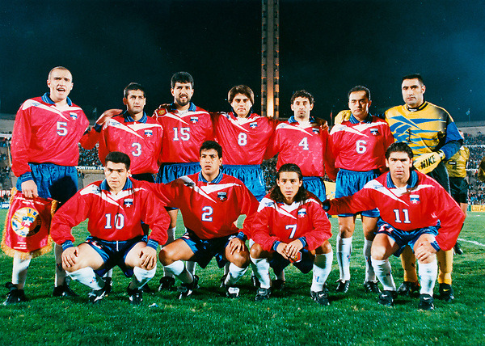
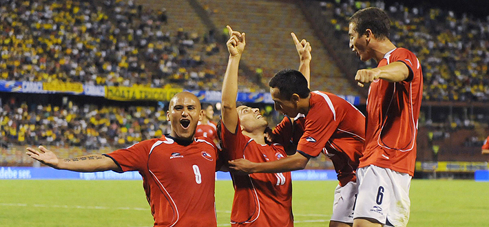
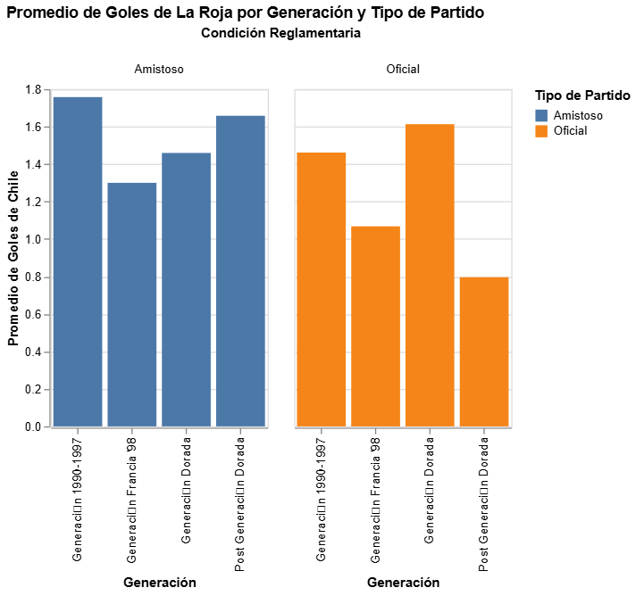

Período 1990–1997
Generación 1990-1997
Contexto histórico pendiente de selección y redacción por el equipo.
Hitos del período
- Hitos históricos pendientes de selección por el equipo.
La Generación Dorada suele ocupar un lugar privilegiado en la memoria del fútbol chileno. Sus títulos y actuaciones internacionales instalaron la idea de que fue la mejor selección de la historia. Pero ¿esa superioridad también se observa cuando se comparan sus estadísticas con las de otras generaciones?
Por Angel Olmedo González y Millaray Zavalla Velozo
Versión preliminar · Entrega 05 · Noviembre de 2026
Versión beta: cifras de trabajo y fotografías pendientes de validación editorial y créditos definitivos.

01 · Contexto histórico
Para responder esta pregunta, este análisis compara el rendimiento de distintas etapas de la selección chilena y distingue entre partidos amistosos y encuentros oficiales. La hipótesis de trabajo sostiene que la Generación Dorada presenta el mejor porcentaje de victorias y la mejor diferencia de goles en competencias oficiales, como Copa América, Clasificatorias y Mundiales.

Período 1990–1997
02 · Metodología
La división de las generaciones constituye una decisión de nosotros y no una clasificación oficial de la Selección Chilena. Los partidos fueron asignados a una generación exclusivamente según el año en que fueron disputados.
Criterio 01
Unidad prevista: % de partidos ganados
Partidos terminados con el resultado Victoria, en relación con el total de encuentros.
Fórmula: Victorias / partidos × 100
Criterio 02
Unidad prevista: Goles / partido
Goles anotados por encuentro.
Fórmula: Goles Chile / partidos
Criterio 03
Unidad prevista: Goles recibidos / partido
Goles recibidos por encuentro.
Fórmula: Goles rival / partidos
Criterio 04
Unidad prevista: Balance neto / partido
Balance entre goles a favor y goles en contra por encuentro.
Fórmula: (Goles Chile − goles rival) / partidos
Criterio de segmentación
No todos los encuentros tienen el mismo carácter competitivo. Los amistosos permiten probar jugadores y esquemas, mientras que los partidos oficiales se disputan por un resultado dentro de una competencia. Por eso, reunir ambos tipos de partidos en una sola cifra puede ocultar diferencias relevantes entre generaciones.
La base de datos fue organizada según generación y condición reglamentaria —amistoso u oficial— para observar cómo cambia el rendimiento al separar ambas categorías. Esta distinción permite avanzar desde una comparación general hacia otra centrada en los encuentros competitivos.
03 · Comparador interactivo
La base de datos fue organizada según generación y condición reglamentaria —amistoso u oficial— para observar cómo cambia el rendimiento al separar ambas categorías. Esta distinción permite avanzar desde una comparación general hacia otra centrada en los encuentros competitivos.
Altair no está disponible. Utiliza la tabla accesible para consultar el filtro seleccionado. Imagen de referencia original: promedio de goles por tipo de partido (sin aplicar el filtro actual).

| Generación | Período | Partidos considerados | Goles a favor por partido | Observación editorial |
|---|---|---|---|---|
| Generación 1990-1997 | 1990–1997 | [Por incorporar] | [Dato por incorporar] | [Nota metodológica opcional] |
| Generación Francia 98 | 1998–2006 | [Por incorporar] | [Dato por incorporar] | [Nota metodológica opcional] |
| Generación Dorada | 2007–2017 | [Por incorporar] | [Dato por incorporar] | [Nota metodológica opcional] |
| Post Generación Dorada | 2018–2026 | [Por incorporar] | [Dato por incorporar] | [Nota metodológica opcional] |
Texto recuperado de la Entrega 4 de Millaray: compara exclusivamente el promedio goleador. Cifras pendientes de revisión por el equipo.
El gráfico muestra una diferencia entre el rendimiento goleador en amistosos y oficiales. En los partidos oficiales, la Generación Dorada registra el promedio más alto entre las cuatro generaciones comparadas, con cerca de 1,6 goles por encuentro. Le siguen la generación de 1990–1997, con aproximadamente 1,46; la generación de Francia 98, con cerca de 1,07; y la etapa posterior a la Generación Dorada, con alrededor de 0,8 goles por partido.
En los amistosos, en cambio, la generación de 1990–1997 alcanza el promedio más alto, seguida por la etapa posterior a la Generación Dorada. La comparación evidencia por qué conviene separar los encuentros según su condición: el orden de las generaciones no es necesariamente el mismo cuando se modifica el tipo de partido considerado.
De todos modos, el promedio de goles a favor no basta por sí solo para determinar cuál fue la mejor selección. Para evaluar la hipótesis también es necesario contrastar el porcentaje de victorias y la diferencia entre goles a favor y en contra en partidos oficiales.
04 · Análisis del rendimiento
Selecciona cada espacio táctico sobre el campo para consultar el enfoque de análisis de victorias, ataque, defensa y diferencia de goles, junto con la serie temporal anual.
Dimensión seleccionada: Victorias
Selecciona una dimensión para consultar el indicador correspondiente en el comparador.
Volver al comparadorVisualización anual 1998–2026 · planificada para la versión final.
Serie anual en desarrollo
Pendiente: exportación de la visualización anual elaborada por el equipo.
05 · Los protagonistas
Goleadores de La Roja: ¿Quiénes son? · Módulo de la Tarea 3.
06 · Cierre de la investigación
Los primeros resultados del promedio goleador oficial son consistentes con la hipótesis inicial: la Generación Dorada aparece en el primer lugar de las generaciones incluidas en esta visualización. Sin embargo, esta evidencia es parcial. La conclusión definitiva dependerá de revisar también el porcentaje de victorias y la diferencia de goles en partidos oficiales. Así, la pregunta no se resuelve solo desde el recuerdo de sus triunfos, sino mediante una comparación histórica basada en datos.